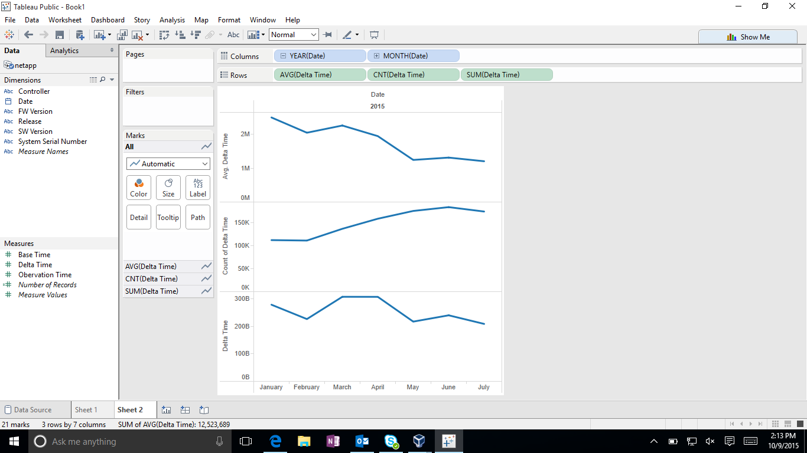

NetApp
Brian McKean, a senior engineer at NetApp, gave a talk about his company in class. He shared a data problem for our class to help solve.
Tool
- Tableau
- Python
Authors
This report is prepared by
Kevin Gifford:
(Q2-1) Is there any temporal relationship (consistency or inconsistency) that
can be observed in regards to "good" and "bad" data (e.g., are any of the issues of bad data related to timing in some fashion)?
Use Excel to read the 'netapp.csv' file so can translate Unix seconds into a human readable timestamp:
Excel: Open: netapp.csv
Add two columns in the Excel file for the 'Observation Time Stamp' and the 'Base Time Stamp' translating Unix seconds to human-readable timestamp via the below formula (the +0 is a GMT offset of 0, GMT-0):
= ( ( ( (UnixSeconds)/86400) + (DATE(1970,1,1) - (DATE(1900,1,1) ) ) ) +0 )
Save the file as 'netapp.xlsx' and use Tableau to plot the 'Observation Time Stamp' and the 'Base Time Stamp' to check the timestamps "sensibility".
Figure 2-1: Base Time Stamps from 'netapp.csv'
Figure 2-1 shows three different views of the 'Base Time Stamps' and one view of 'Observation Time Stamp' in the 'netapp.csv' file. From left-to-right:
- The chart on the left shows the 'Base Time Stamps' from the entire file: note the 'Base Time Stamps' range from 1970 to 2017.
- The chart second from the left shows a zoomed view of the 'Base Time Stamps': Note all of the 'Base Time Stamps' samples dated 2005, 2009 and 2012.
- The chart second from the right shows a zoomed view of 2014 and 2015 'Base Time Stamps': Note the significant number of samples dated in 2014 and the band for samples in October, 2015.
- The chart on the right shows the 'Observation Time Stamp' distribution which follows a similar general pattern as the 'Base Time Stamps' distribution: Note the band of 'Observation Time Stamp' in 2044.
Analysis: There are lots of data samples for which the Observation Time Stamp doesn't make sense given that the data file is stated to range from January - July 2015. Note that it was required to translate the Unix seconds to a human-readable time format to discern this observation. Recommendation:
- (1) Throw all of this data out when analyzing Jan-Jul 2015 ASUP data
- (2) Figure out why so many erroneous 'Base Time Stamps' and 'Observation Time Stamp' observations.
(Q2-2): Is there a relationship between 'delta time' and 'Release'?
To investigate Q2-2, I'd like to get rid of any data samples not timestamped in
- To do so I did the following:
Save the updated Excel file (with the computed 'Observation Time Stamp' and the 'Base Time Stamp') as a space-delimited msdos '.txt' file:
Excel: Save As: MS-DOS Formatted Text (.txt) --> 'netapp-msdos.txt'
We now have a text file in MS-DOS format which uses a Carriage-Return (\r) instead of a newline (\n) to delimit new lines. We also need to get rid of any samples not in the period of Jan-Jul, 2015. We'll use a couple of standard Unix/Linux text processing tools to translate the carraige returns to newlines and then filter all of the lines which are each a sample row of netapp.csv text:
prompt> cat netapp-msdos.txt | tr '\r' '\n' | grep 2015 | grep -v Oct > netapp-2015
We can then open the space-delimited 'netapp-2015' file with Excel and save as an Excel file just so we can read into Tableau.

The problem with the above graph is that the average deltatime is badly skewed by exorbitantly large deltatime values. This is an area where additional scripts are required to filter the data in order to give meaningful visualizations. However, at a glance the 'Galena' Release seems to have significantly more samples with exorbitantly large deltatimes than the 'Illinois' or the 'Kingston' Release.
Parker Illig
I would explain this as a question Tableau couldn't, or at least couldn't easily, visualize. The graph shows each group of software versions and gives each version two bars, the average delta time in blue and the average median time in orange. In order to show the median, which was much smaller than most averages, I had to use logarithmic scaling to get any kind of comparison between the two values. Most of the bars in the graph show their medians' around the 24 hours mark, but averages usually were much greater than the mean due to the logarithmic scaling. This shows that most software versions had data points that were huge, meaning that each software version had significant issues. Due to these consistently bad results, I was unable to show any correlation between software version and delta time without using custom scripts to do more intensive filtering.
Robert Kendl

Here's the firmware version graph. I computed the average delta times for each firmware version and put it into three colors. The green bars are way too high for a delta time of about a day (over 100,000 I believe) and the red bars are too low (under 60,000). As you can see, there's only one bar that is yellow, which means it gives pretty reliable delta times of around 84,000.
John Raesly
Is there a correlation between delta time and date?
It does seem that there is a correlation between date and delta time. The delta time has decreased over time dramatically. This brings a follow up question of why this is happening?

Will Farmer
Set Up Imports
import numpy as np
import pandas as pd
import bqplot.pyplot as blt
import matplotlib.pyplot as plt
import time
import datetime as dt
import pysparkling
conn = pysparkling.Context()
from ipywidgets import interact
%matplotlib inline
Load Data
We're going to use the pandas module to load the data, as its csv stuff is really nice.
data = pd.read_csv('netapp.csv', header=0,
names=['date', 'system', 'controller', 'obs_time',
'base_time', 'delta', 'release', 'fw', 'sw'],
dtype={'system': object})
Now we want to look at the what the rows look like.
data.head()
| date | system | controller | obs_time | base_time | delta | release | fw | sw | |
|---|---|---|---|---|---|---|---|---|---|
| 0 | 01/01/2015 | 1016FG000254 | A | 1420149619 | 1420063224 | 86395 | Galena | 07.86.34.00 | 10.86.0G00.0028 |
| 1 | 01/01/2015 | 1016FG000432 | A | 1420125162 | 1420091715 | 33447 | Galena | 07.86.36.30 | 10.86.0G00.0048 |
| 2 | 01/01/2015 | 1017FG000057 | A | 1420102145 | 1420015747 | 86398 | Galena | 07.86.29.00 | 10.86.0G08.0017 |
| 3 | 01/01/2015 | 1030FG000606 | A | 1420111809 | 1420044906 | 66903 | Galena | 07.86.45.30 | 10.86.0G00.0048 |
| 4 | 01/01/2015 | 1030FG000619 | A | 1420112025 | 1420111359 | 666 | Galena | 07.86.45.30 | 10.86.0G00.0048 |
Analyze Data
We will first examine the integrity of the overall dataset.
Delta Time Distribution
This first plot looks at the time distribution of the deltas. Ideally we would see a flat line at approx. 86,000. We don't see that.
plt.figure(figsize=(16, 8))
plt.scatter(data['obs_time'], data['delta'], s=1)
plt.xlabel('Linux Epoch Time')
plt.ylabel('Deltas')
plt.show()

Mean and Standard Deviation
We now examine the mean and standard deviation of the deltas for each system. First we generate our data. We will be setting a standard deviation threshold of one hour. Any system data that falls in the deviation we will call "good".
thresh = 3600
grouping = data.groupby('system')
size = len(grouping)
stat_data = np.zeros((size, 4))
i = 0
for key, group in grouping:
deltas = group['delta']
stat_data[i][0] = deltas.mean()
stat_data[i][1] = deltas.std()
stat_data[i][2] = len(deltas)
stat_data[i][3] = (255 if deltas.std() <= thresh else 0)
i += 1
We can plot these results.
fig, axarr = plt.subplots(1, 2, figsize=(16, 8))
axarr[0].scatter(stat_data[:, 0], stat_data[:, 1],
c=stat_data[:, 3], cmap=plt.cm.coolwarm,
alpha=0.2)
axarr[1].scatter(stat_data[:, 0], stat_data[:, 1],
c=stat_data[:, 3], cmap=plt.cm.coolwarm,
alpha=0.2)
domain = np.arange(-1e7, 7e7)
axarr[0].plot(domain, thresh * np.ones(len(domain)), 'k--')
axarr[1].plot(domain, thresh * np.ones(len(domain)), 'k--')
axarr[0].set_xlabel('Mean Delta Time')
axarr[0].set_ylabel('Standard Deviation')
axarr[1].set_xlabel('Mean Delta Time')
axarr[1].set_ylabel('Standard Deviation')
axarr[1].set_ylim(0, thresh * 2)
plt.show()
From this we can interpret several things.
- The standard deviation of each system is terrible. Only a very small set of systems have consistently "good" data. This means that most systems have bad data.
- On the other hand, most systems are clustered at the (relative) origin. This is helpful, but many systems are still bad.
Now that we know many systems result in poor data consistency, we can branch out and examine just the rows that we consider "valid", i.e., those rows in which the delta field is approximately 86,000 (the length of a day in seconds).
Good Row Analysis
We start by pulling out only the valid rows. (We also get the "bad" rows, but we'll use those later.)
clean_raw_data = data.values[np.where(np.abs(data.values[:, 5] - 86400) <= 3600)[0]]
dirty_raw_data = data.values[np.where(np.abs(data.values[:, 5] - 86400) > 3600)[0]]
clean_data = pd.DataFrame(clean_raw_data,
columns=['date', 'system', 'controller', 'obs_time',
'base_time', 'delta', 'release', 'fw', 'sw'])
print(len(clean_data))
clean_data.head()
533203
| date | system | controller | obs_time | base_time | delta | release | fw | sw | |
|---|---|---|---|---|---|---|---|---|---|
| 0 | 01/01/2015 | 1016FG000254 | A | 1.42015e+09 | 1.420063e+09 | 86395 | Galena | 07.86.34.00 | 10.86.0G00.0028 |
| 1 | 01/01/2015 | 1017FG000057 | A | 1.420102e+09 | 1.420016e+09 | 86398 | Galena | 07.86.29.00 | 10.86.0G08.0017 |
| 2 | 01/01/2015 | 1032FG000284 | A | 1.420105e+09 | 1.420018e+09 | 86395 | Galena | 07.86.32.00 | 10.86.0G00.0024 |
| 3 | 01/01/2015 | 1032FG000288 | B | 1.420074e+09 | 1.419988e+09 | 86396 | Galena | 07.86.34.00 | 10.86.0G00.0013 |
| 4 | 01/01/2015 | 1032FG000308 | A | 1.420151e+09 | 1.420065e+09 | 86396 | Galena | 07.86.32.00 | 10.86.0G00.0024 |
We see that we've immediately removed half of the rows. This is arguably good. Notice the term "arguably"...
Reduction Comparison
We'll start by looking at which systems "lost" the most data. We will do this by comparing the system groupings.
original_grouping = data.groupby('system')
clean_grouping = clean_data.groupby('system')
keys = data['system'].unique()
We will now extract the difference from this array.
key_groups = np.zeros((len(keys), 2))
i = 0
for k in keys:
key_groups[i][0] = len(original_grouping.get_group(k))
try:
key_groups[i][1] = len(clean_grouping.get_group(k))
except KeyError:
pass
i += 1
key_groups_difference = key_groups[:, 0] - key_groups[:, 1]
And now we can plot this.
plt.figure(figsize=(16, 8))
plt.scatter(np.arange(len(key_groups_difference)), key_groups_difference, s=1)
plt.show()

We will also do a histogram.
hist, bins = np.histogram(key_groups_difference, bins=200)
center = (bins[:-1] + bins[1:]) / 2
plt.figure(figsize=(16, 8))
plt.bar(center, hist, align='center')
plt.show()

From this we can interpret that many systems have no change, while many lose their data.
Release Analysis
Now let's look at the dirty data. We will see if the software and firmware versions affect the number of bad rows.
dirty_data = pd.DataFrame(dirty_raw_data,
columns=['date', 'system', 'controller', 'obs_time',
'base_time', 'delta', 'release', 'fw', 'sw'])
print(len(dirty_data))
dirty_data.head()
536778
| date | system | controller | obs_time | base_time | delta | release | fw | sw | |
|---|---|---|---|---|---|---|---|---|---|
| 0 | 01/01/2015 | 1016FG000432 | A | 1.420125e+09 | 1.420092e+09 | 33447 | Galena | 07.86.36.30 | 10.86.0G00.0048 |
| 1 | 01/01/2015 | 1030FG000606 | A | 1.420112e+09 | 1.420045e+09 | 66903 | Galena | 07.86.45.30 | 10.86.0G00.0048 |
| 2 | 01/01/2015 | 1030FG000619 | A | 1.420112e+09 | 1.420111e+09 | 666 | Galena | 07.86.45.30 | 10.86.0G00.0048 |
| 3 | 01/01/2015 | 1030FG000621 | A | 1.420112e+09 | 1.420111e+09 | 1205 | Galena | 07.86.45.30 | 10.86.0G00.0048 |
| 4 | 01/01/2015 | 1030FG000630 | A | 1.420112e+09 | 1.420076e+09 | 36243 | Galena | 07.86.45.30 | 10.86.0G00.0048 |
Now we group by software version. We also convert this to an array, as we're interested in the number of bad values per software version. (Note, we make some assumptions about these software versions. This sorting may be incorrect.)
sw_groups = dirty_data.groupby('sw')
sw_data = np.array(sorted([(int(''.join(t[0].split('.')[:2]) + t[0].split('.')[-1]),
t[0], len(t[1]))
for t in list(sw_groups)],
key=lambda t: t[0]))
numeric_sw_data = np.array(sw_data[:, 2], dtype=int)
fw_groups = dirty_data.groupby('fw')
fw_data = np.array([(t[0], len(t[1]))
for t in list(fw_groups)
if t[0] != 'no storage_array_profile.txt'])
numeric_fw_data = np.array(fw_data[:, 1], dtype=int)
plt.figure(figsize=(16, 8))
plt.plot(np.arange(len(numeric_sw_data)), numeric_sw_data,
label='Software Versions')
plt.plot(np.arange(len(numeric_fw_data)), numeric_fw_data,
label='Firmware Versions')
plt.legend()
plt.show()

Hey! That's perfect! That shows that the number of bad rows was really really high for specific versions, but have since been reduced to a lower amount. That's exactly what we wanted to see. As per request, now let's normalize this. In other words, let's examine the percent of bad rows for each release.
Normalized Releases
First we'll get the software groups.
def sw_to_key(s):
arr = s.split('.')
return int(''.join(arr[:2]) + arr[-1])
def fw_to_key(s):
return int(''.join(s.split('.')))
dirty_sw = dirty_data.groupby('sw')
total_sw = data.groupby('sw')
sw_versions = sorted([(t[0], sw_to_key(t[0])) for t in total_sw], key=lambda t: t[1])
normal_sw = np.zeros((len(sw_versions), 3), dtype=np.float128)
for i in range(len(sw_versions)):
key = sw_versions[i][0]
normal_sw[i][0] = sw_to_key(key)
total_group = total_sw.get_group(key)
normal_sw[i][2] = len(total_group)
try:
dirty_group = dirty_sw.get_group(key)
except KeyError:
normal_sw[i][1] = 0
else:
normal_sw[i][1] = (len(dirty_group) / len(total_group))
Now we can get the firmware groups.
dirty_fw = dirty_data.groupby('fw')
total_fw = data.groupby('fw')
fw_versions = sorted([(t[0], fw_to_key(t[0]))
for t in total_fw
if not t[0].startswith('no storage')],
key=lambda t: t[1])
normal_fw = np.zeros((len(fw_versions), 3), dtype=np.float128)
for i in range(len(fw_versions)):
key = fw_versions[i][0]
normal_fw[i][0] = fw_to_key(key)
total_group = total_fw.get_group(key)
normal_fw[i][1] = len(total_group)
try:
dirty_group = dirty_fw.get_group(key)
except KeyError:
normal_fw[i][1] = 0
else:
normal_fw[i][1] = (len(dirty_group) / len(total_group))
And now we can plot.
fig, axarr = plt.subplots(2, 1, figsize=(16, 8))
axarr[0].plot(np.arange(len(normal_sw)), normal_sw[:, 1], 'b-')
axarr[0].scatter(np.arange(len(normal_sw)), normal_sw[:, 1], s=100,
c=normal_sw[:, 2], cmap=plt.get_cmap('Blues'))
axarr[0].set_xlim(-1, 90)
axarr[0].set_title('Normalized Software Versions')
axarr[1].plot(np.arange(len(normal_fw)), normal_fw[:, 1], 'g-')
axarr[1].scatter(np.arange(len(normal_fw)), normal_fw[:, 1], s=100,
c=normal_fw[:, 2], cmap=plt.get_cmap('Greens'))
axarr[1].set_title('Normalized Firmware Versions')
plt.show()
These plots can be interpreted by looking at the $y$ axis. In each graph, the $y$ axis corresponds to the percentage of bad rows for the specific software or firmware version. We can see that there appears to be no strong correlation between versions and the number of bad rows.
Each point is also shaded, where the darker the node is the more data exists for that version.